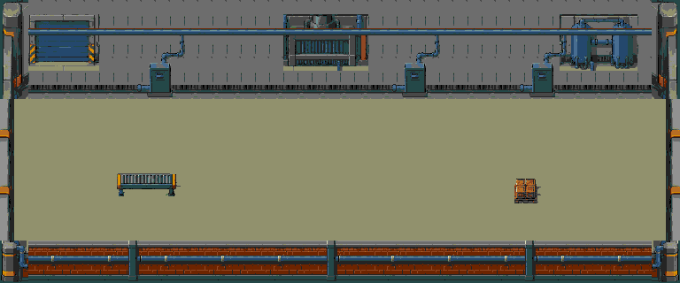
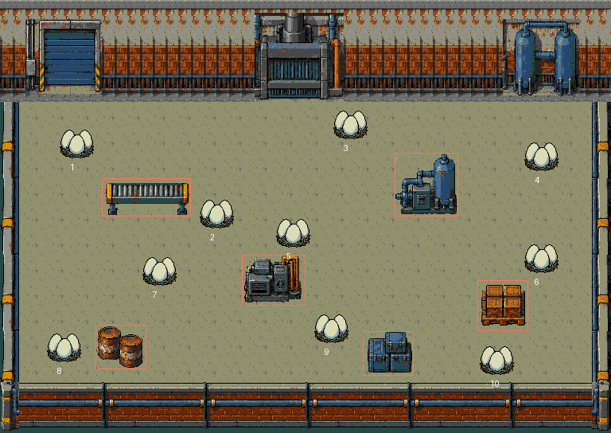

Fase 10 · O berçário da fábrica
Concreto e alvenaria com detalhe de 1 px, metal azul gasto e seis grupos de máquinas e carga espalhados pelo campo. Os dez conjuntos de ovos foram retirados das duas fileiras e distribuídos entre as rotas. A sala mantém a identidade industrial da chegada da fase 9.
Acesso: FASE TESTE → Campanha → 10. GitHub atualizado até a fase 9 no commit 5ad7f971. As revisões das fases 10 e 11 estão locais para avaliação. A fase 11 compartilha agora este cenário; a ROM para download inclui ambas.
Mundo: 768×544 pxAltura útil: 352 pxProps: 6 gruposObjetivo: 10 ovosReserva: 470/640 tiles
Composição completa
Esteira/bancada, bomba com tanque, compressor, palete de caixas, barris e suprimentos ocupam alturas e lados diferentes. O campo útil passou de 160 para 352 px na vertical. Os corredores permitem contornar os equipamentos e buscar ângulos de tiro; as 3.277 posições livres da malha são conectadas.
Comparar fundo anterior

Dez alvos distribuídos

Cada conjunto tem aproximação de tiro livre de obstáculos e foi destruído com disparos no teste por controle. O renderizador pede no máximo 6 dos 7 slots disponíveis nas câmeras possíveis. Os dez estados lógicos continuam independentes: destruir um ovo, sair da região e voltar não o restaura. Matar inimigos não avança esse objetivo.
Capturas no jogo
 Entrada e primeiro conjunto · ROM em NTSC
Entrada e primeiro conjunto · ROM em NTSC Bancadas, máquina e rotas · ROM em NTSC
Bancadas, máquina e rotas · ROM em NTSC Depósito lateral · ROM em NTSC
Depósito lateral · ROM em NTSC Dez conjuntos destruídos · ROM em NTSC
Dez conjuntos destruídos · ROM em NTSC Carga no trecho central · ROM em NTSC
Carga no trecho central · ROM em NTSC Pausa com progresso preservado · ROM em NTSC
Pausa com progresso preservado · ROM em NTSCPassaram em NTSC/PAL: cenário e pixels dos ovos, rolagem, seis colisões e limites, os dez alvos por controle, persistência ao voltar pela sala, bomba limitada à câmera e pausa com restauração do cenário e do progresso. A prova de conclusão isola inimigos e tiros antes do percurso; a execução seguinte usa somente controles.
Memória e carga
1.147 padrões exatos na ROM (36.704 bytes), mapa de 13.056 bytes, cache de 320 tiles. Os seis quadros dos ovos usam 150 tiles: 470/640 tiles, 15.040 bytes residentes. Heap do cache: 4.854 bytes, liberados na pausa. A janela conservadora exige no máximo 303 padrões. Não há substituição aproximada de tiles, e a resolução do jogo continua 320×224.
Quatro inimigos e 6+6 tiros, 20 s por trecho, com IA ativa, vida protegida e reposição apenas dos tiros inativos. Há pequenas quedas no trecho central:
| Trecho | NTSC · FPS | PAL · FPS |
|---|
| Parte superior | 60.00 | 50.00 |
| Máquinas centrais | 56.25 | 49.55 |
| Parte inferior | 60.00 | 50.00 |
Combate natural de 30 s é registrado à parte. Não certifica dificuldade humana nem desempenho em qualquer situação. Hardware físico não testado. As fases 9 e 11 passaram nas regressões da integração.
ROM da revisão anterior da fase 10: f7716cb329bee0dee223e2249cfac3ff5fb54e9d6bcb1b8bedd6b798f388beed